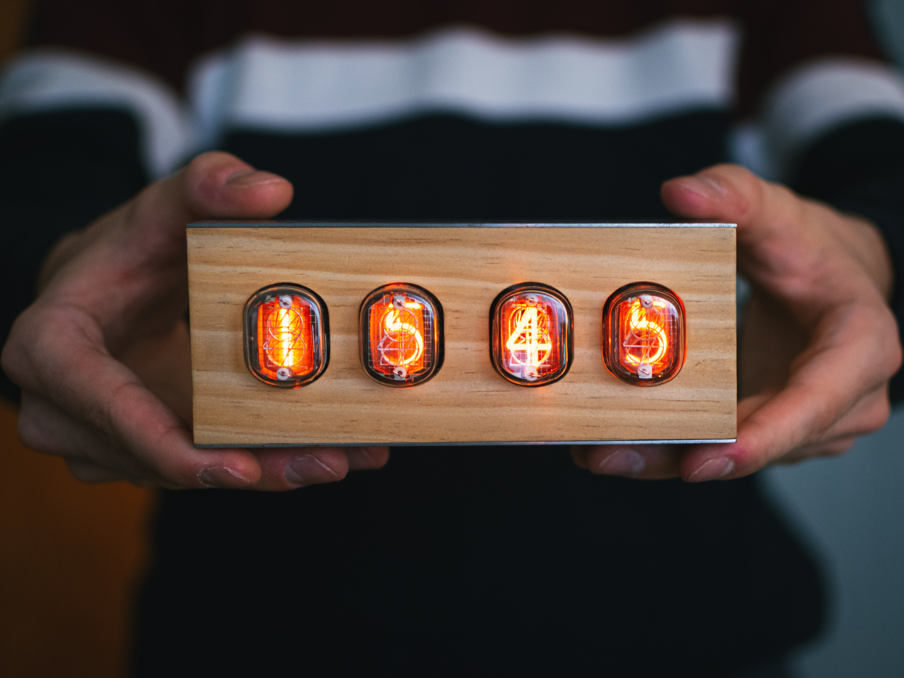
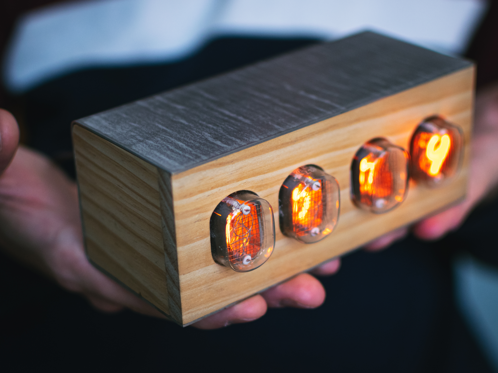
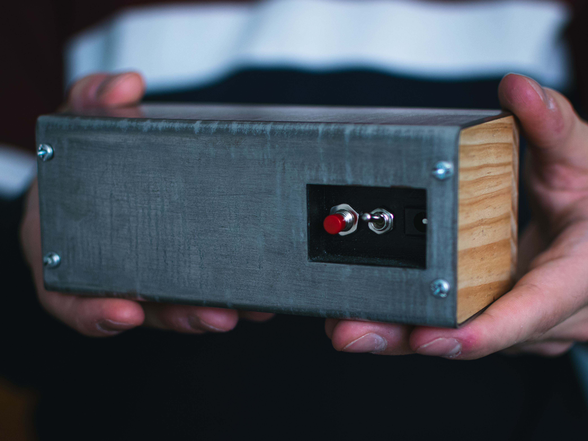

4-tube Nixie clock: making something beautiful with what you have
Six months of design, and a clock that is still running seven years later.

The starting idea
This clock was born from a desire: to make something beautiful with what I had at hand, in an upcycling spirit. I was inspired by YouTube videos and articles found on the web, which gave me a taste for the steampunk aesthetic of Nixie tubes.
The electronics
The heart of the system is, once again, an Arduino Nano, programmed to read a DS1307 real-time clock module. It drives a chain of four 74HC595 shift registers, one per tube. These circuits in turn control MPSA42 transistors, able to withstand the 180 V that the tubes require. This voltage is supplied by a dedicated power supply.
The 4 QS27-1 tubes are backlit by RGB LEDs. Their colour and intensity are adjusted with a button on the back.
The circuits are made by hand, on standard 2.54 mm pitch boards, after trials on a breadboard. The electronic schematic and the C++ code were created entirely by hand, before the arrival of AI assistants.

The enclosure
The front and side panels are made of salvaged solid wood: baseboard or joinery panelling, cut on the CNC, glued, sanded and finished with wax.
The top, back and bottom are galvanized steel sheet salvaged from an oven, sanded then bent.
When sanded, the zinc of the galvanization reveals streaks that evoke Damascus steel, which gives the clock an appearance that I find very successful.

The tools
The machined or 3D-printed parts were drawn in SolidWorks and prepared for CAM in Fusion 360. Machining is done on the CNC with Universal G-Code Sender, a very rudimentary toolchain but one that works well, and the printed parts were made on a first-generation Creality Ender 3.
Seven years later
The clock is still here and still works, plugged in continuously. It has one known limitation: the DS1307 module drifts by a few minutes per week. One possible improvement would be to replace it with a temperature-compensated crystal module, such as the DS3231, which connects in the same way.
What I take from it
This project was a great learning curve in resourcefulness: electronics with high voltage, woodworking, machining, 3D printing, embedded programming. Above all, it taught me to do the best I can with what I have at hand.